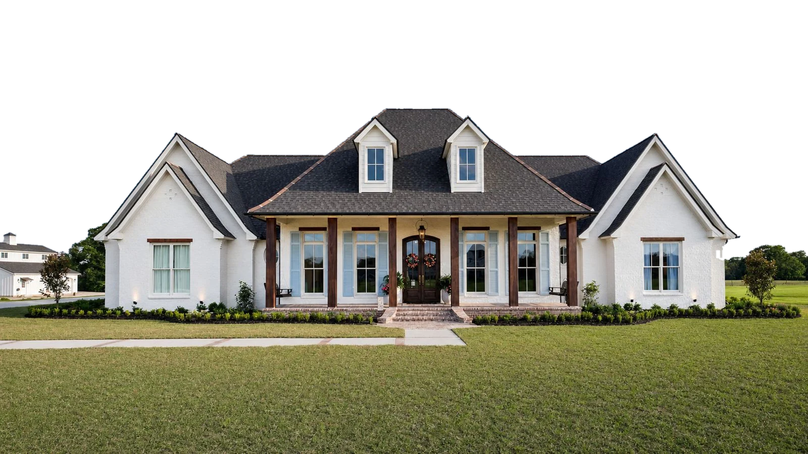
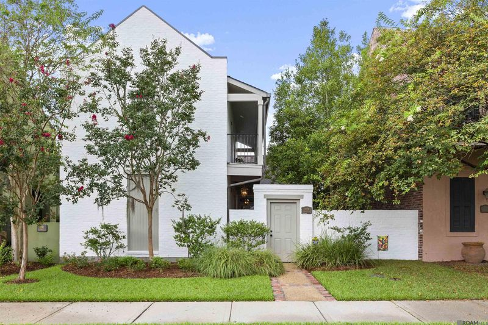

REALTOR · Baton Rouge and the Felicianas
A home deserves a point of view.
I help buyers and sellers across Baton Rouge, Zachary, St. Francisville, New Roads and the Felicianas see a home clearly and decide well.
Covered porch over the pond
Basil Lane, St. Francisville

Who you’ll work with
You’ll work with me directly.
I’m Caleb Jackson, a REALTOR with Keller Williams First Choice. I care about how a home is seen, what it’s really worth and how each decision feels for the people making it. You get straight answers and a plan you can follow.
- 81Closed sales since 2022
- $25.1MIn closed sales since 2022
Baton Rouge · Zachary · St. Francisville · New Roads · the Felicianas


Featured · St. Francisville
Before a buyer sees it, decide how it should be seen.
Basil Lane is a white brick home in St. Francisville with a deep front porch, heavy timber posts and a covered deck out back over the pond. Every photograph here is the real house.
Take a closer look Front elevation
Front elevation Front porch
Front porch Covered deck over the pond
Covered deck over the pond

How I work
Every move starts with a clear plan.
Read the house honestly
What it does well, what a buyer will question and what is worth fixing before it goes live.
Decide how it’s seen
Photography, the order of rooms and the first line of the listing, chosen on purpose.
Stay close to the end
You hear from me directly, with plain options at every decision through closing.
Two ways to start
Where are you starting?

Compare homes by what they’d really cost.
Put homes side by side with your loan applied to each one, so the monthly number is clear before you tour.
Open the comparisonKnow where you stand before you list.
Test two sale scenarios side by side and see what each could leave you before anything goes live.
Start a selling planLocal and easy to reach
Tell me what you’re thinking about.
A text is the fastest way to reach me. I’ll tell you what I actually think.